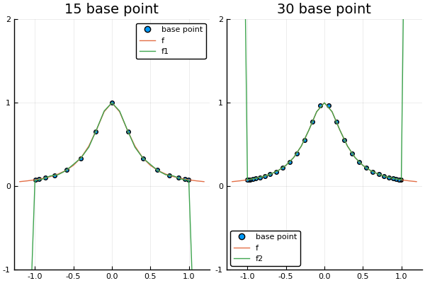

切比雪夫插值
切比雪夫插值多项式
InterpolationPolynomial.chebyshev_interpolation — Method切比雪夫插值
chebyshev_interpolation(a,b,n)切比雪夫插值是一种特定最优的点间距选取方式
切比雪夫插值的动机是在插值区间上，提高对插值误差的最大值的控制
根据插值误差公式，要使其最大值足够小，等价于使$(x-x_1)(x-x_2)···(x-x_n)$这个首一多项式的最大值足够小
切比雪夫多项式
切比雪夫多项式：$T_n(x)=\cos(n \space \arccos x)$
令$y=\arccos x$:
$\begin{aligned} T_1(x) &= x \\ T_2(x) &= \cos(2y) = \cos^2y-\sin^2y = 2x^2-1 \\ T_3(x) &= 4x^3 - 3x \end{aligned}$
一般地:
$\begin{aligned} T_{n+1}(x) &= \cos ny \cos y - \sin ny \sin y \\ T_{n-1}(x) &= \cos ny \cos y - \sin ny \sin (-y) \\ \end{aligned}$
可得： $T_{n+1}(x) + T_{n-1}(x) = 2\cos ny \cos y = 2xT_n(x)$
切比雪夫多项式递归关系:
令$T_n(x)=0$, 当$x\in [-1,1]$时，当且仅当$n\arccos x = 奇数·\frac{\pi}{2}$时成立，则有：
此时$(x-x_1)(x-x_2)···(x-x_n) \le \frac {1}{2^{n-1}}T_n(x)$
即$(x-x_1)(x-x_2)···(x-x_n)$具有最小最大值为$\frac {1}{2^{n-1}}$
切比雪夫插值节点
一般地对于区间$[a,b]$，通过：
- 使用$\frac {b-a}{2}$因子拉伸点
- 然后将点平移到$\frac {b+a}{2}$，使得中心移动到[a,b]的中心
则有:
此时不等式
在区间$[a,b]$上成立
$x_i$称为切比雪夫根，以切比雪夫根为基点的插值多项式称为切比雪夫插值多项式
Example
# 在[0,pi/2]上取处4个切比雪夫插值点
julia> chebyshev_interpolation(0,pi/2, 4)
4-element Array{Float64,1}:
1.511011451432306
1.0859570283396214
0.4848392984552752
0.059784875362590584对龙格函数使用切比雪夫插值
f(x) = 1/(1+12*x^2)
nd = newton_difference_quotient
x_1 = chebyshev_interpolation(-1, 1, 15) # 取15个切比雪夫插值点
c_1 = nd(x_1, f.(x_1))
x_2 = chebyshev_interpolation(-1, 1, 30) # 取30个切比雪夫插值点
c_2 = nd(x_2, f.(x_2))
x = -1.2:0.1:1.2
s1 = scatter(x_1, f.(x_1), label="base point")
s2 = scatter(x_2, f.(x_2), label="base point")
plot(
plot!(s1, x, [f.(x) horner_rule(length(x_1)-1, c_1, x, x_1)], label=["f" "f1"], ylims = (-1,2), yticks=-1:1:2, title="15 base point"),
plot!(s2, x, [f.(x) horner_rule(length(x_2)-1, c_2, x, x_2)], label=["f" "f2"], ylims = (-1,2), yticks=-1:1:2, title="30 base point")
)可以看到在$[-1,1]$上多项式图像的扭动已经消失
